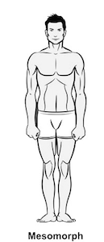

המזומורף
מזומורפים מתוארים בדרך כלל כבעלי מבנה גוף אתלטי. הם בעלי מבנה עצמות דחוס, שרירים דחוסים ובוגרים ובד"כ גם יציבה נכונה וטובה
.רוב המזומורפים הם בעלי כתפיים רחבות ומותניים צרות.
יש להם מטבוליזם מהיר והם יכולים להוריד במשקל מהר יותר מאנדומורפים.
לנשים מזומורפיות יש בדרך כלל מבנה גוף הדומה לשעון חול, ולגברים מבנה הדומה למשולש.
תכונות נוספות של המזומורף הן עור קשה ושיער מלא וסבוך
.עצמות ושרירים בראש בולטים יותר, מבנה הפנים, הלסת המרובעת והכבדה ועצמות הלחיים בולטים ומוגדרים יותר
,הפנים ארוכות ורחבות וקובייתי יותר בצורתו
.הידיים והרגליים של המזומורף מפותחות יותר, ואפילו אצבעות הידיים והרגלים נראות שריריות.
אפשר לומר שהמזומורפים הם ברי המזל מהשלושה.
הם שומרים את היתרונות הבולטים של שני הסוגים האחרים- אנדומורפים ואקטומורפים
.המכשול העיקרי של המזומורפים למעשה הוא ביטחון עצמי מופרז
.בגלל שהמזומורפים יכולים לבנות מסת שריר ולהוריד קילוגרמים מיותרים של שומן בקלות יחסית, הם נוטים לזלזל בחשיבותה של הדיאטה והפעילות הגופנית
,וסומכים על הגנים שלהם שיעזרו להוריד במשקל ולחזור לכושר כאשר יידרשו לעשות זאת.
אסטרטגיית דיאטה ואימונים מתאימה למזומורפים
שלושה עד חמישה אימונים אירוביים בשבוע בקצב בינוני עד מהיר ישמרו אתכם בכושר טוב וביחס שריר-שומן תקין . כדאי לכוון ל- 30-45 דקות של אימון אירובי כל פעם . כשעליתם לרמה מתאימה, אימונים בעצימות גבוהה כמו ריצה יכולים להעלות את רמת האימון שלכם. לאימון כוח, אימון במשקל קל-בינוני יוסיפו להגדרת השרירים אך לא לנפחם. כדאי לבצע שני סטים של 12-15 חזרות במשקל קל-בינוני לכל קבוצת שרירים ראשית . דרך עבודה טובה נוספת היא אימון מחזורי (מעבר מהיר בין תרגילים בלי הפסקות) מפני שהוא תורם לעוצמה וכוח סיבולת בלי לנפח את השרירים.